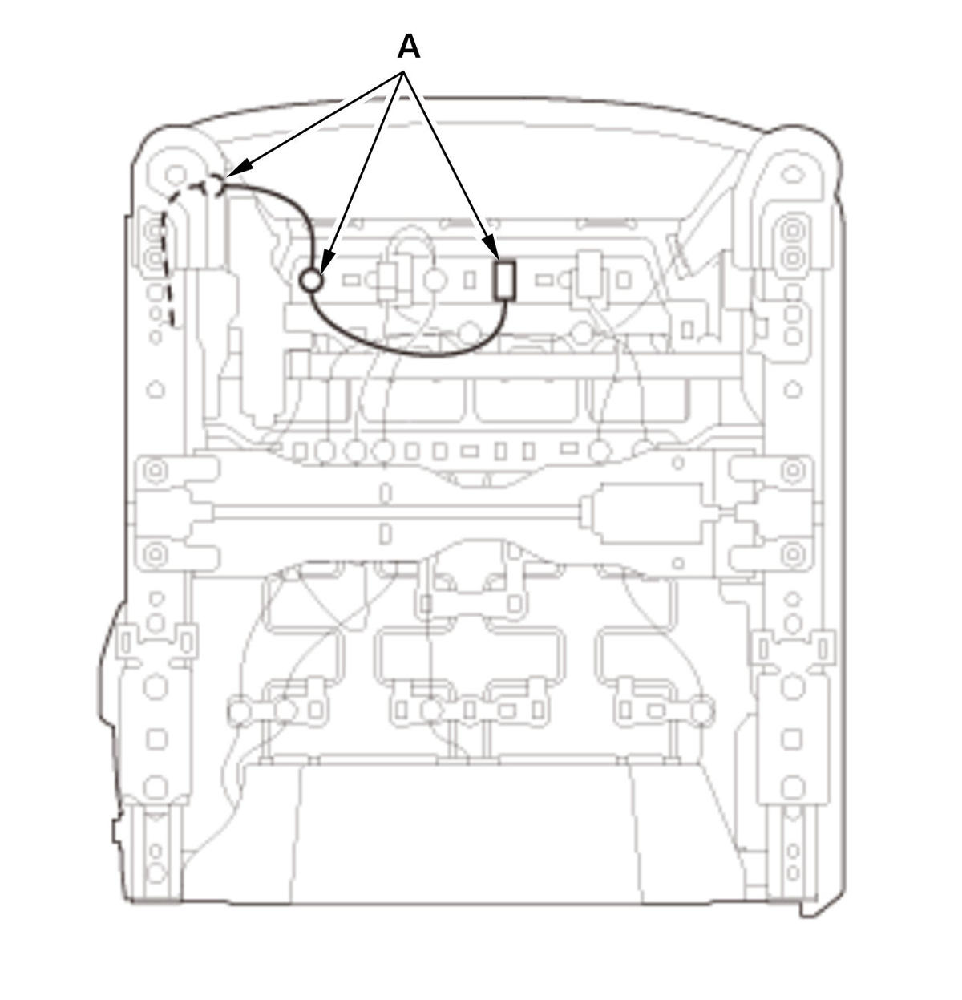
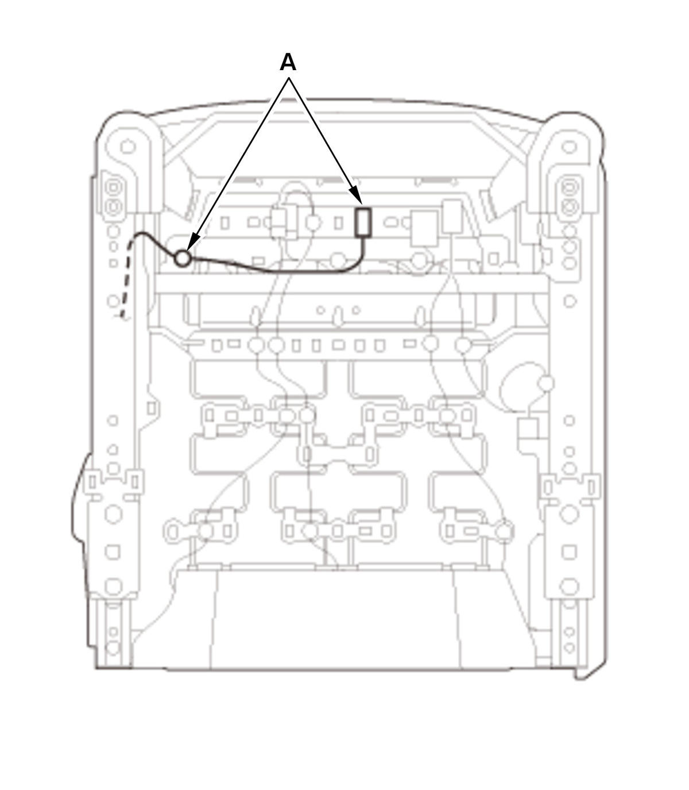
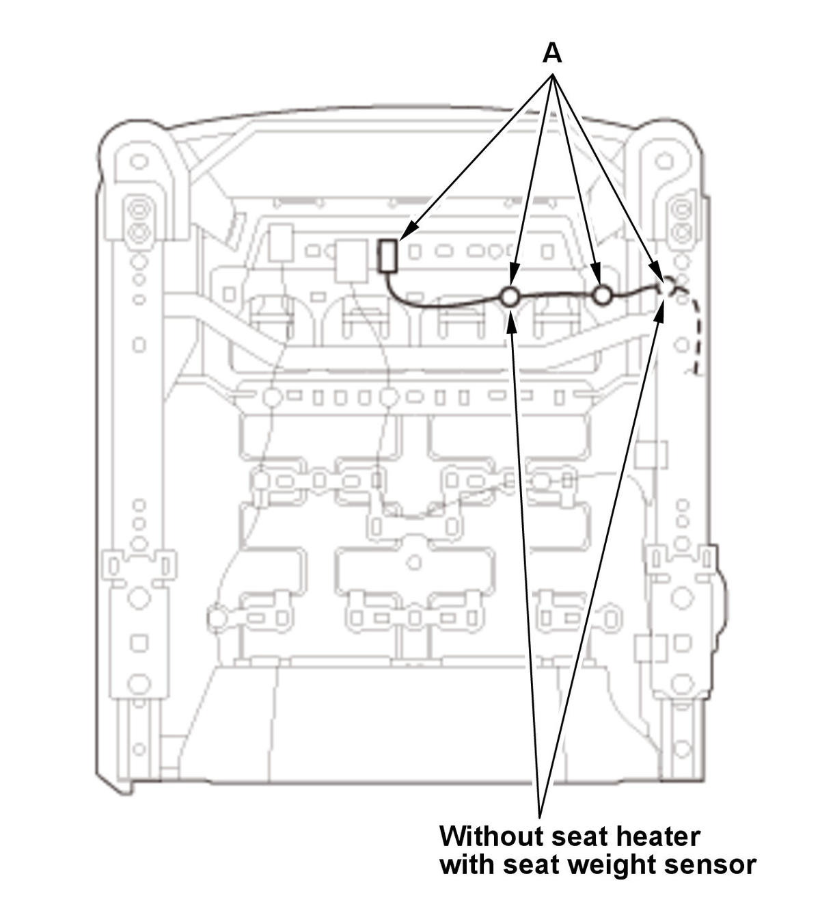
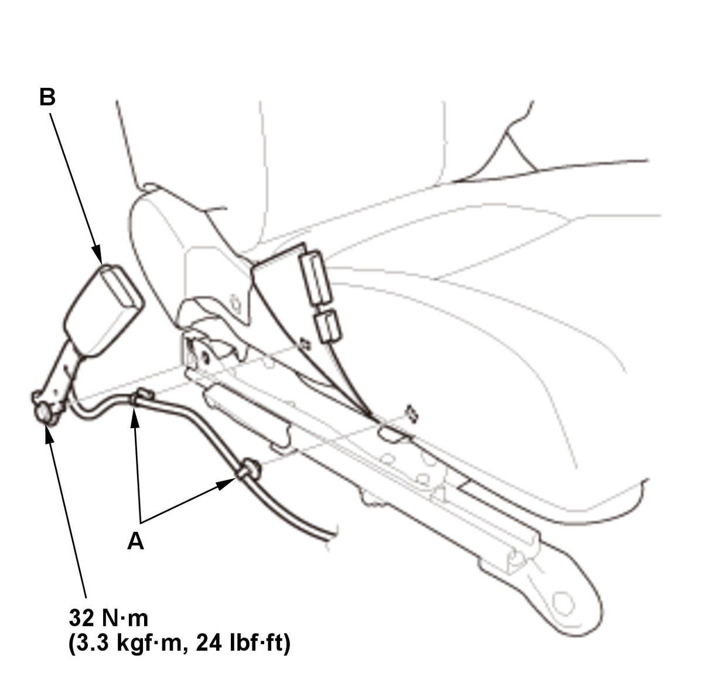

Removal and Installation
NOTE: SRS components are located in this area. Review the SRS component locations and the precautions and procedures before doing repairs or service.
- Front Seat - Remove
- Front Seat Belt Buckle - Remove
Power seat 


Courtesy of HONDA, U.S.A., INC.HONDA, U.S.A., INC.HONDA, U.S.A., INC.Driver's Manual seat
Passenger's manual seat
1. Remove the harness clips (A). 
Courtesy of HONDA, U.S.A., INC.2. Remove the harness clips (A). 3. Remove the seat belt buckle (B).
- All Removed Parts - Install
1. Install the parts in the reverse order of removal.
NOTE: Assemble the wave washer (A), the plane washer (B), and the toothed lock washer (C) on the center anchor bolt (D) as shown.